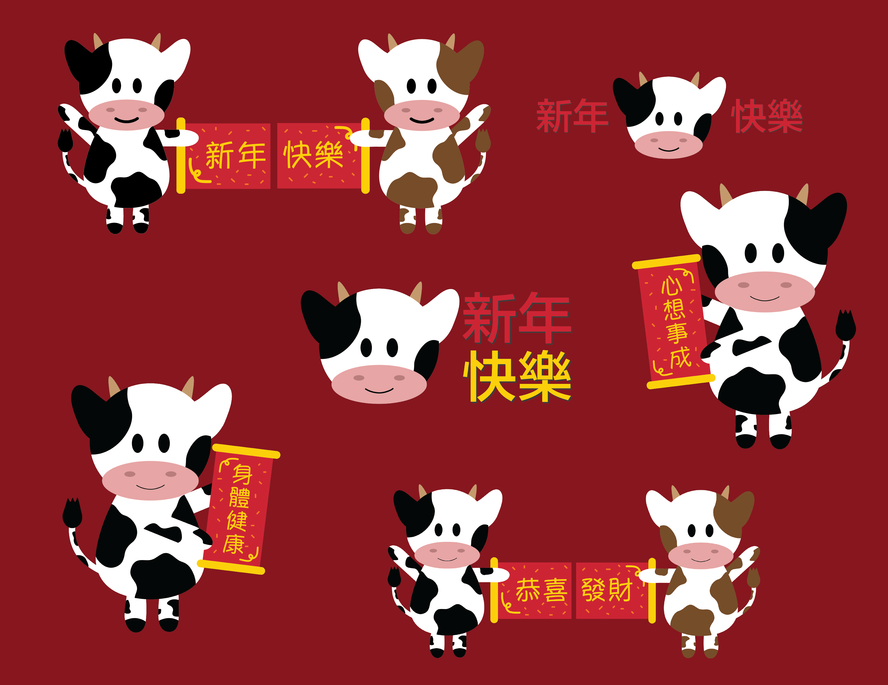
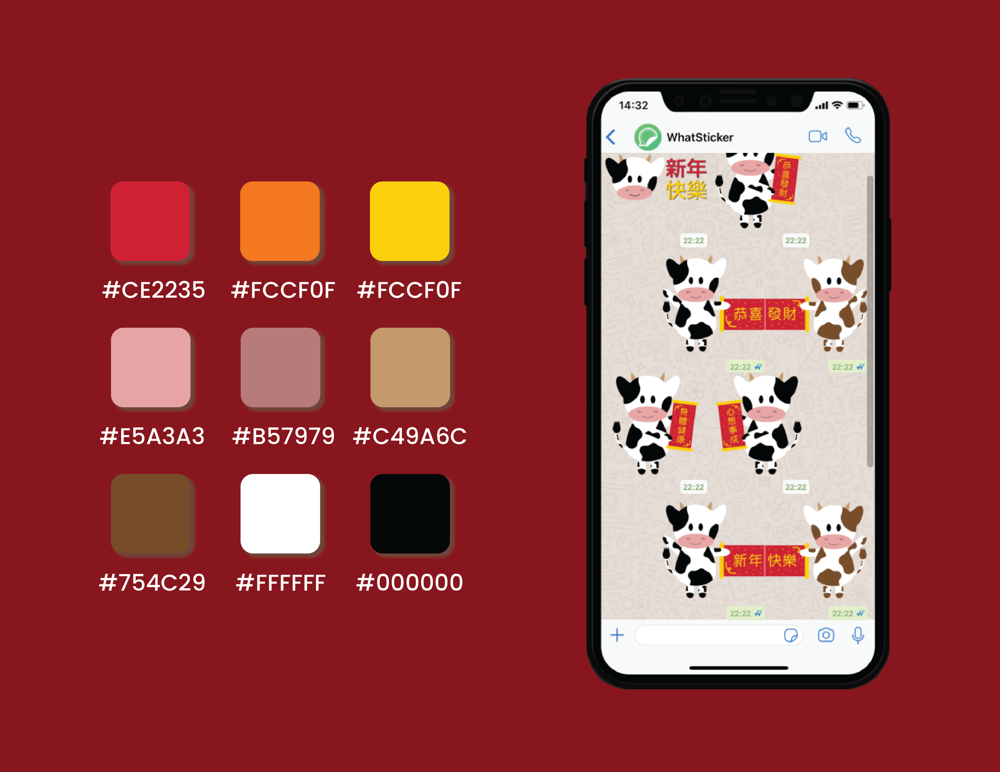

Year of the Ox Stickers
duration:
Feb 2021
tools used:
Adobe Illustrator
introduction:
In my family and many others, sending stickers over messaging apps is a tradition for all major holidays. This Chinese New Year holiday, I decided to design my own set of stickers to send to family and friends. Since the Chinese New Year zodiac this year is the ox, I created some oxes holding fai chun with different festive greetings.
My sticker pack accumulated over 10,000 downloads within 24 hours of uploading! Check out the full sticker pack here!

full sticker pack

swatches of all of the colors used and a mockup of the stickers in WhatsApp!